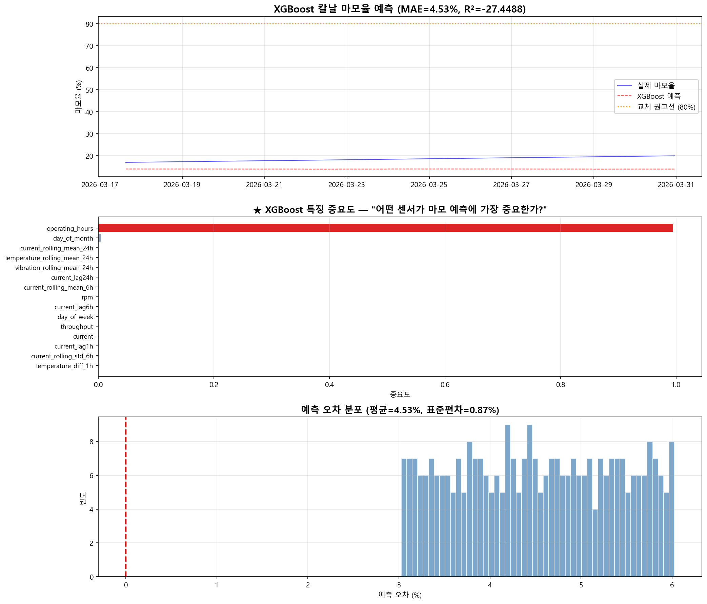

TIME SERIES MODEL #4 — 슈레더 실제 적용 모델
XGBoost 시뮬레이션 결과 상세 설명
칼날 마모율(RUL) 예측 — "어떤 센서가 마모에 가장 영향을 주는가?"
0 XGBoost란?
💡 비유: 엑셀(Excel)의 초강력 버전
엑셀에서 여러 열(특징)을 보고 결과를 예측하는 것과 비슷합니다.
핵심 차이: LSTM/TFT는 시계열 패턴을 자동으로 학습. XGBoost는 사람이 수동으로 특징(lag, rolling 등)을 만들어야 합니다.
★ XGBoost가 슈레더에서 실제 사용되는 모델!
칼날 마모 예측에 실제로 적용됩니다. 이유: 해석 가능(특징 중요도) + 빠름(<5ms) + 경량(Edge 배포)
30개
특징(Feature) 수
수동 엔지니어링
수동 엔지니어링
4.53%
MAE (마모율 오차)
<5ms
추론 속도
Edge 배포 최적
Edge 배포 최적
★ XGBoost의 핵심: 특징 엔지니어링
원본 시계열: [25.1, 25.3, 25.8, 26.5, 27.1, ...] (시간 순서대로)
↓ 수동 변환 (특징 엔지니어링)
XGBoost 입력 (30개 특징):
┌────────┬──────┬──────┬───────┬────────┬─────────┐
│ 현재온도 │ 1h전 │ 6h전 │ 24h전 │ 6h평균 │ 6h표준편차 │
│ 27.1 │ 26.5 │ 25.3 │ 24.8 │ 26.0 │ 0.7 │
└────────┴──────┴──────┴───────┴────────┴─────────┘
+ 진동 lag/rolling + 전류 lag/rolling + 시간/요일 + 가동시간
→ 시간 정보를 "특징"으로 변환하여 트리 모델에 입력
(LSTM/TFT는 시퀀스 자체를 입력, XGBoost는 특징으로 변환 필수)
그래프 1
칼날 마모율 예측 vs 실제

위 그래프
👁️ 읽는 방법
파란 실선 = 실제 마모율(%) / 빨간 점선 = XGBoost 예측 / 노란 점선 = 교체 권고선(80%)
마모율이 교체 권고선(80%)에 도달하기 전에 예측하여 계획적 교체가 가능합니다.
그래프 2 ★
특징 중요도 — "어떤 센서가 마모 예측에 가장 중요한가?"
🔥 XGBoost만의 최대 강점!
"어떤 센서가, 어떤 특징이 마모 예측에 가장 기여했는가"를 순위로 보여줍니다. 이것은 LSTM에서는 불가능합니다 (블랙박스).
특징 중요도 순위:
1위. operating_hours (가동시간): 0.9949 ████████████████████
2위. day_of_month: 0.0045
3위. current_rolling_mean_24h: 0.0002
4위. temperature_rolling_mean: 0.0001
...
해석:
"칼날 마모에 가장 큰 영향을 주는 것은 '얼마나 오래 사용했는가'이다"
→ 직관적으로 말이 되는 결과! 오래 쓰면 마모되는 것이 당연!
→ 하지만 전류/온도/진동도 미세한 보정에 기여
★ 이런 해석이 가능한 것이 XGBoost의 최대 가치!
LSTM: "왜 이상인지?" → 설명 못 함 (블랙박스)
XGBoost: "왜 마모되었나?" → "가동시간이 길어서!" (설명 가능!)
그래프 3
예측 오차 분포
📊 읽는 방법
막대 그래프가 0(빨간 점선) 주변에 모여 있으면 예측이 골고루 정확한 것입니다.
오차가 한쪽으로 치우치면(예: 항상 +쪽) 모델이 체계적으로 과소/과대 예측하고 있다는 뜻입니다.
vs 다른 모델과 비교
| Prophet | LSTM | TFT | XGBoost ★ | ARIMA | |
|---|---|---|---|---|---|
| 특징 생성 | 자동 | 자동 | 자동 | 수동 (핵심!) | 자동 |
| 해석 가능 | 분해 | ❌ | Attention | 특징 중요도 ★ | 파라미터 |
| 추론 속도 | 느림 | ~10ms | ~100ms | <5ms ★ | 빠름 |
| 모델 크기 | 중간 | ~10MB | ~100MB | ~1MB ★ | 극소 |
| Edge 배포 | 가능 | 가능 | 어려움 | 최적 ★ | 가능 |
👉 결론
XGBoost는 "어떤 센서가 왜 중요한지" 설명할 수 있고, 초경량(<1MB, <5ms)이라 Edge 장비에 최적입니다. 슈레더 칼날 마모 예측에 실제 사용됩니다!